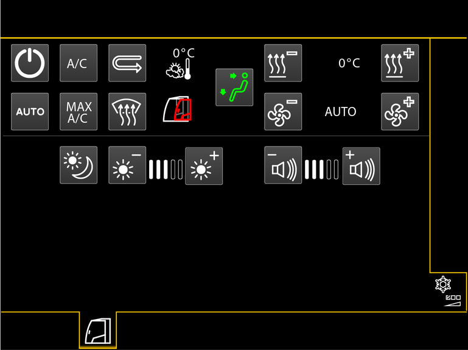

Bildschirmseite Klimaanlage und Bildschirm
Taste Bildschirmseite Klimaanlage und Bildschirm
Bildschirmseite Klimaanlage und Bildschirm einblenden.

Fig. 1956: Bildschirmseite Klimaanlage und Bildschirm
Fig. 1956: Bildschirmseite Klimaanlage und Bildschirm
Taste Temperatur verringern
Kabinentemperatur verringern.
Taste Temperatur erhöhen
Kabinentemperatur erhöhen.

Anzeige Temperatur
Solltemperatur in Kabine.
Anzeige Temperatur (leuchtet blau)
Minimale Heizleistung ist eingestellt.
Maximale Kühlleistung ist eingestellt.
Anzeige Temperatur (leuchtet rot)
Maximale Heizleistung ist eingestellt.
Minimale Kühlleistung ist eingestellt.

Anzeige Temperatur
Enteisen ist eingeschaltet.
Taste Gebläsestufe verringern
Gebläsestufe verringern.
Taste Gebläsestufe erhöhen
Gebläsestufe erhöhen.
Anzeige Gebläsestufe
Gebläsestufe.
Anzeige Gebläsestufe
Automatischer Betrieb des Gebläses ist eingeschaltet.
Taste Lautstärke verringern
Lautstärke des Warnsummers verringern.
Taste Lautstärke erhöhen
Lautstärke des Warnsummers erhöhen.
Anzeige Lautstärke
Aktuelle Lautstärke des Warnsummers.
Taste Helligkeit verringern
Helligkeit des Bildschirms verringern.
Taste Helligkeit erhöhen
Helligkeit des Bildschirms erhöhen.
Anzeige Helligkeit
Aktuelle Helligkeit des Bildschirms.
Taste Ein/Aus
Klimaanlage ist ausgeschaltet.
Klimaanlage einschalten.
Taste Ein/Aus (leuchtet grün)
Klimaanlage ist eingeschaltet.
Klimaanlage ausschalten.
Taste Klimakompressor
Klimakompressor ist ausgeschaltet.
Klimakompressor einschalten.
Taste Klimakompressor (leuchtet grün)
Klimakompressor ist eingeschaltet.
Klimakompressor ausschalten.
Taste Klimaautomatik
Klimaautomatik ist ausgeschaltet.
Klimaautomatik einschalten.
Taste Klimaautomatik (leuchtet grün)
Klimaautomatik ist eingeschaltet.
Klimaautomatik ausschalten.
Taste Maximale Kühlung
Niedrigste Kabinentemperatur und maximale Gebläsestufe einschalten.
Taste Umluft
Umluft ist ausgeschaltet.
Umluft einschalten.
Taste Umluft (leuchtet grün)
Umluft ist eingeschaltet.
Umluft ausschalten.

Taste Defrost-Modus
Enteisen ist ausgeschaltet.
Enteisen einschalten.

Taste Defrost-Modus (leuchtet grün)
Enteisen ist eingeschaltet.
Enteisen ausschalten.
Taste Gebläsebereich (leuchtet grün)
Gebläse im Kopfbereich und im Fußbereich ist eingeschaltet.
Gebläse im Kopfbereich ausschalten.
Taste Gebläsebereich (leuchtet grün)
Gebläse im Fußbereich ist eingeschaltet.
Gebläse im Kopfbereich ist ausgeschaltet.
Gebläse im Kopfbereich einschalten.
Taste Gebläsebereich (leuchtet grün)
Gebläse im Kopfbereich ist eingeschaltet.
Gebläse im Fußbereich ist ausgeschaltet.
Gebläse im Kopfbereich und im Fußbereich einschalten.
Taste Bildschirm invertieren
Bildschirm für Nachteinsatz invertieren.
Anzeige Außentemperatur
Aktuelle Außentemperatur.
Anzeige Kabinentür geöffnet
Kabinentür ist geöffnet.